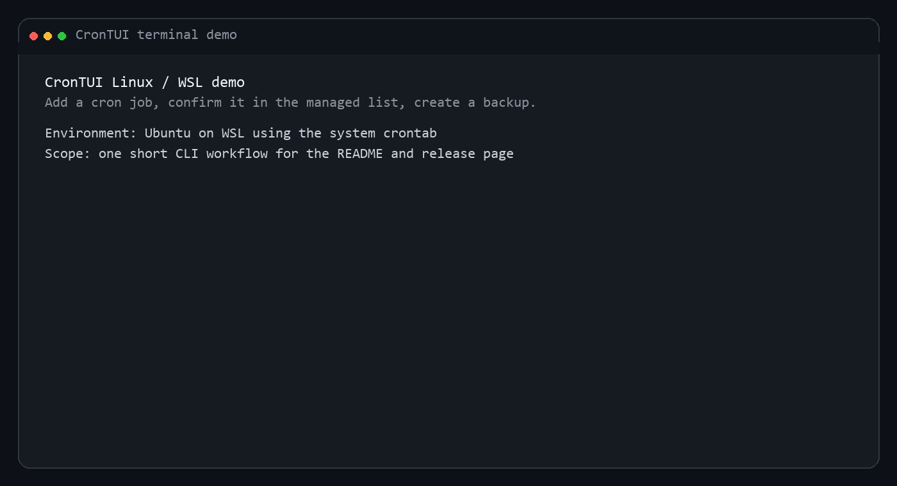
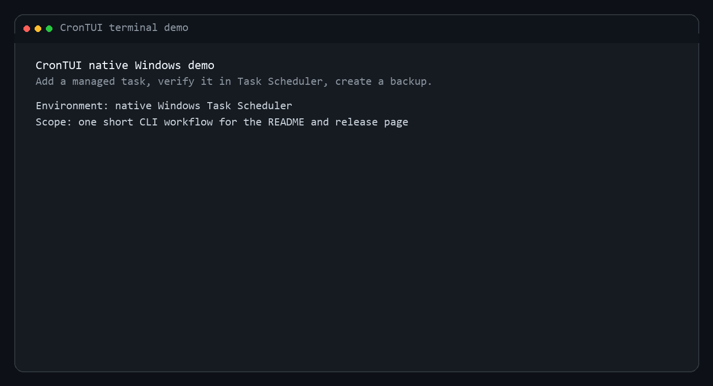

Linux, macOS, WSL
Manage real `crontab` entries with schedule presets, next-run previews, and backup support.
Terminal scheduling with an opinionated UI
CronTUI wraps cron and native Windows scheduling in a visual terminal workflow: add jobs, validate expressions live, preview the next run, keep backups, and still drop to a plain CLI when you want scripting instead of menus.


Modes
CronTUI does not pretend Windows and Unix cron are the same system. It gives both environments a clean terminal workflow while staying honest about the semantics and limits.
Manage real `crontab` entries with schedule presets, next-run previews, and backup support.
Manage only CronTUI-owned tasks inside a dedicated Task Scheduler folder instead of mutating arbitrary jobs.
Every major operation is also available as a non-interactive command when you need automation instead of UI.
Why CronTUI
The best parts of the tool are the small ones: live cron validation, next-run previews, stable managed IDs, and backups before writes. That turns a fragile text edit into a workflow you can trust when the schedule actually matters.
Realtime cron validation while you type.
See upcoming run times before the entry is written.
Automatic snapshots before each write or restore.
Search and filter by command or enabled state.
Install
Go install is the short path. Releases are there when you want a binary. Native Windows and WSL both have explicit, documented paths.
go install github.com/meru143/crontui@latest
crontui
crontui add "0 9 * * 1-5" "backup.sh"
crontui list --jsonBest fits:
- developer workstation schedules
- recurring local scripts
- WSL cron management
- native Windows task management